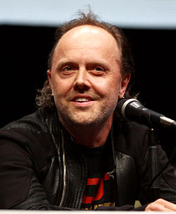
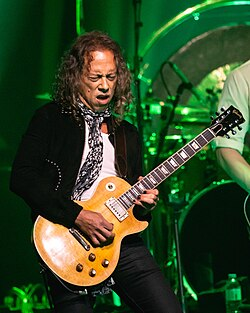
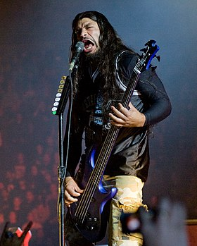

Джеймс А́лан Ге́тфілд (англ. James Alan Hetfield; нар. 3 серпня 1963, Лос-Анджелес, Каліфорнія, США) — американський музикант, лідер треш-металу, пісняр, співак і ритм-гітарист американського треш/хеві-метал гурту «Metallica».
Ларс Ульріх (дан. Lars Ulrich; нар. 26 грудня 1963) — барабанщик, головний автор пісень (разом з Джеймсом Гетфілдом) та співзасновник гурту «Metallica».
Кірк Лі Гемметт, інша транслітерація імені Керк Лі Хемметт (англ. Kirk Lee Hammett; нар. 18 листопада 1962, Сан-Франциско, Каліфорнія, США) — американський музикант, соло-гітарист метал-гурту Metallica з 1983 року.
Роберт Трухільйо (ісп. Roberto Agustín Miguel Santiago Samuel Trujillo Veracruz);нар. 23 жовтня 1964) — американський бас-гітарист. З 2003 року басист гурту Metallica.